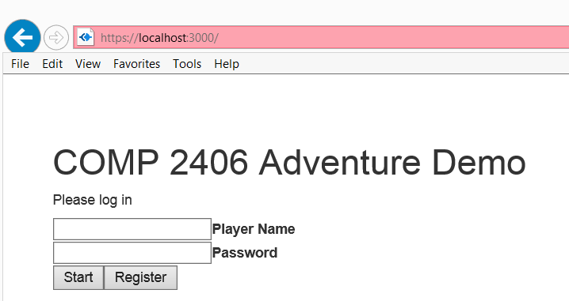
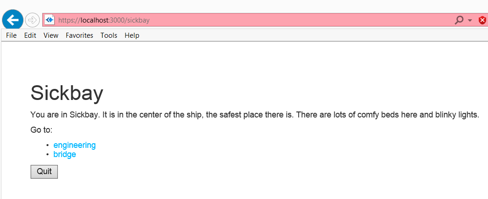

COMP 2406 - Fall 2014 Tutorial #9
MongoDB and the Adventure Game Demo
© L.D. Nel 2014
Revisions
Description:
The purpose of this tutorial is to have you fix a problem in the demonstration code that relates to asynchronous function calls in node.js and express.js. Also to become familiar with code that embodies most of the concepts we have discussed in the course so far.
The main task is for you to become familar with the complete code of the adventure game demo from last term and correct a defect in the current version that resulted from an attempt to move the code from running on Express 3.x to running on Express 4.x. The defect results from the asynchronous function calls used to set up the routes.
This tutorial involves probably the most elaborate piece of code seen so far in tutorials: the adventure game demo code. It makes use of everything we have discussed in the course so far: node.js, express.js, cookies and sessions, mongodb, redirect programming pattern, jade, and also contains an example of encrypting passwords by hashing them with a bcrypt-nodejs module. So part of the purpose of the tutorial is for you to really get to know all of this code. You will definitely have to do this as homework as there is too much code to just learn at the tutorial.
IMPORTANT: This tutorial is meant as a homework assignment and for you to demonstrate your results at your tutorial session. You will not be able to complete it if you only start when you come to the tutorial. You will need to read about and learn those aspects of javascript that pertain to this tutorial on your own and come up with a strategy to solve the problems.
To get credit for the tutorial you must complete, or make significant progress on, the exercise problems provided and demonstrate your results to the tutorial TA before you leave the tutorial.
Instructions:
Problem 1: Preliminary
First we will demonstrate for review a basic issue with asynchronous function calls.
Run the song parser 01A_parse_songs.js node application. It should produce an output.txt file in the songs directory.
Now we want to read in the data from the songs/output.txt file. We have provided two applications to do that: 01B_read_JSONsongs.js and 01C_read_JSONsongsWRONG.js. Try them both out.
Here is the correct version:
var fs = require('fs');
var inputFilePath = "songs/output.txt";
fs.readFile(inputFilePath , 'utf8', function(err, data){
console.log('now running callback function');
if(err) console.log('FILE RE-READ ERROR');
var fileData = JSON.parse(data);
console.log('the data from: ' + inputFilePath );
console.log(fileData.songs[0]);
});
Here is the wrong version:
var fs = require('fs');
var inputFilePath = "songs/output.txt";
fs.readFile(inputFilePath, 'utf8', function(err, data){
console.log('now running callback function');
if(err) console.log('FILE RE-READ ERROR');
var fileData = JSON.parse(data);
});
console.log('the data from: ' + inputFilePath );
console.log(fileData.songs[0]);
Can you see what is wrong? Basically in the wrong version the callback function will run after the attempt to output the results. That is because the callback function runs asynchronously only AFTER the file contents have been read whereas the output statements run synchronously right after the call to readFile() returns. Remember the call to readFile() returns right away, but its callback function only gets called after the file contents have been read "in the background".
In the correct version, the output is done as part of the callback function and so does not depend on when the callback runs relative to the other statements. It is really easy for us to accidently write the wrong version because we are so used to the idea the statements that appear later in the code will in fact run later -but that only works when all the calls are all synchronous.
This basic issue illustrated here is what is wrong with the adventure demo code that we want you to fix as the main task in this tutorial.
Problem 2) Setting Up MongoDB Adventure Database
This tutorial provides 2 versions of Anil Somoyaji's Adventure game demo from last year: an Express 3.x version and an Express 4.x version. The Express 3.x version is basically the code from last year except I have replaced the bcrypt module with bcrypt-nodejs module instead so that I will run accross all platforms without the need for native tools (like requiring visual studio and python on Window's machines).
In this tutorial you will be working with the Express 4.x version but trying to fix a problem that results from porting the Express 3.x version to Express 4.x. Because of this we are including the Express 3.x version for reference so you can see how that code worked.
Before you can run the adventure game demo you need to set up the MongoDB database that includes the game rooms. Do that as follows:
1) Open a command line prompt window start up the mongodb database as you did in the last tutorial by executing something like: (Remember to set up a data/db directory for mongodb.)
c:\mongodb2_6_5\bin\mongod.exe -dbpath c:\mongodb2_6_5\data\db
2) Open a new command line window. (IMPORTANT: open a new CMD window, don't try and use the one that was used to start the server -it won't work) Start the mongo command line client by executing something like:
c:\mongodb2_6_5\bin\mongo.exe
3) Now open yet another command window on the 2406Adventure4x express application folder.
Create your node_modules directory by install all the required modules specified by package.json by executing:
npm install
(Note I got some warnings on some machines when doing the install but not on others. The code still ran despite the warnings. If anyone figures out where the warnings are coming from please let me know.)
Run the storeRooms.js node application that sets up the database.
node storeRooms.js
Use the mongo console client to confirm that your database is in fact set up before you go on to the next problem.
Problem 3)
With the database set up you should be able to run the express 4x adventure game application: app.js.
node app.js
It should start the game server.
Now to play the game open a browser and visit:
https://localhost:3000
(Note this site uses https not http). It should present you with a screen where you can register a new user:

Once registered you can log in, start the game and go from room to room by clicking the appropriate links. (Notice in the screen capture below how the room is appearing as part of the browser URL. That is, there are routes for the individual rooms.)

Try it and become familiar with the code. Use the mongo client to see what effect this is having on your adventure-demo database. Try adding another user. If you are on Internet Explorer try accessing from Firefox to represent different session client.
Look at the code and become familiar with how it works.
Now we are ready to fix a problem in this code. The code uses routes that represent the specific rooms. That is, when a user clicks on a room they want to visit the code re-directs the browser to a URL like: localhost:3000/sickbay.
In the express 3.x code the routes like app.get('/sickbay', function(){}) could be set up in any order, or asynchronously, because they are applied where the app.use(app.router); statement appears in the code. That is, routes can be set up asynchronously anywhere because they are deamed to be "located" where the app.use(app.router) statement appears.
But express 4.x has done away with the app.use(router) alltogether and instead routes like app.get('/sickbay', function(){}) are deemed to be in the order in which they are actually created. This creates a real problem because if the routes for the rooms are set up asynchronously -as they are in the express 3.x code they will like be in the wrong order and not work. To temporarly overcome this we have hard-coded the room routes in the express 4.x app and commented out where these routes were being created from the database. Your task here is to fix this and remove the hard-code "band-aid" solution.
There is no specific intened solution. In fact, we are very interested in the different solutions you come up with and hope to post several of your approaches. Here are some of the possible strategies you can use to try and fix this code:
1) Use synchronous versions of that code that is currently asychronous.
2) Do all with work of setting up routes within the same asynchrounous function.
3) Use only one route like /visitrooms and use a query parameter to specify the room.
4) Use parameterized routes like app.get('/visit/:theroom', function(...){})
5) Don't try to specify the room with the route but instead dig it out of the request object or the session/cookie associated with the app.
6) Some other solution. There are many possible ways to try and solve this problem.
Problem 4) Adding Another Room
Finally demonstrate your code by adding another room to the database and showing that your application can use it (without requiring modification of the app.js code.)
When you have completed these exercises show your results to the TA's to get credit for the tutorial.